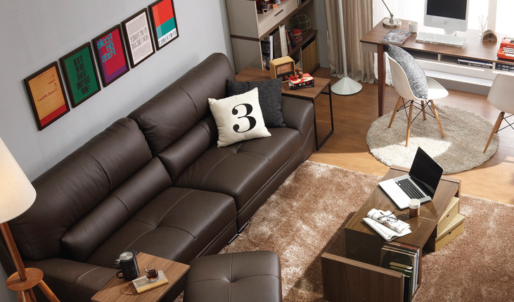

모리스 5000 일반형
245,000원
규격 :
가로 1880 / 세로 920 / 깊이 870 (mm)
색상 :
초코브라운 / 캐주얼 베이지 / 캐주얼 베이지 / 초코브라운 /
캐주얼 베이지 / 캐주얼 베이지 / 캐주얼 베이지 / 캐주얼 베이지
기타 :
가격은 125자 기준으로 표기하였으며 설계에 따라 가격은
달라질 수 있습니다.
가죽컬러 선택
높이 선택
모리스 5000 일반형 제품 상세정보

집안의 작은 유럽,
위더스 데코
1.공간효율이 좋은 팔걸이
기존 3인용 소파 대비 전체 크기는 작아져 작은 공간에도 들어가지만 팔걸이가 슬림해져 앉은 공간은
10센티미터 이상 더 넓어집니다.
2.볼륨감 있는 등 쿠션
패브릭 쿠션이 얹혀진 듯한 형태로 부드러운 곡선 라인을 살렸습니다.
3.내추럴한 원목 다리
천연 무늬가 살아있는 고무나무로 만들어진 원목 다릿공간은 로봇 청소기도 사용이 가능한 11센티미터의
높이로 제작되었습니다.
소재
가죽: 가죽 천연 소가죽(SP), 인조가죽(하단, 후면,측면)
프레임: 건조목 프레임, 벨트
내장재: 좌판 고밀도 36kg 롱스폰지 사양 / 등판 마이크로화이버 소재
다리: 고무나무 원목(도장)
판매원: (주)한샘
원산지: 중국
STYLE & DESIGN

스마트한 모던 스타일
1. 상부라운딩으로 디자인의 완성도를 높였습니다.
2. 비대칭 느낌이 강조된 디자인으로 세련된 이미지를 강조하였습니다.
3. 심플하고 둥글게 마감된 손잡이로 전체적인 모던한 이미지와 조화를 이룹니다.
MATERIAL &
DETAILS

안정감을 갖춘 이동책상 시스템
1. 내추럴 오크가 적용되어서 자연스러운 우드 느낌이 묻어나는 디자인의 책상입니다.
2. 모서리가 라운드 처리 되어 있어서 이동과 사용 시에 더욱 안전합니다.
3. 접지력이 높고 스토퍼 기능을 갖춘 고급사양 캐스터를 사용했습니다.